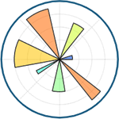

首页 > Matplotlib
Matplotlib教程（非常详细）
Matplotlib 是 Python 中最受欢迎的数据可视化软件包之一，支持跨平台运行，它是 Python 常用的 2D 绘图库，同时它也提供了一部分 3D 绘图接口。Matplotlib 通常与 NumPy、Pandas 一起使用，是数据分析中不可或缺的重要工具之一。
Matplotlib 是 Python 中类似 MATLAB 的绘图工具，如果您熟悉 MATLAB，那么可以很快的熟悉它。Matplotlib 提供了一套面向对象绘图的 API，它可以轻松地配合 Python GUI 工具包（比如 PyQt，WxPython、Tkinter）在应用程序中嵌入图形。与此同时，它也支持以脚本的形式在 Python、IPython Shell、Jupyter Notebook 以及 Web 应用的服务器中使用。
本套教程从 Matplotlib 基础知识入手，手把手教你如何使用
Matplotlib 是 Python 中类似 MATLAB 的绘图工具，如果您熟悉 MATLAB，那么可以很快的熟悉它。Matplotlib 提供了一套面向对象绘图的 API，它可以轻松地配合 Python GUI 工具包（比如 PyQt，WxPython、Tkinter）在应用程序中嵌入图形。与此同时，它也支持以脚本的形式在 Python、IPython Shell、Jupyter Notebook 以及 Web 应用的服务器中使用。
教程特点
本套教程适合 Matplotlib 的初学者学习，在学习完本教程后，您将掌握 Matplotlib 的种绘图方法，并对数据可视化这一概念，有一个全新的认识。本套教程从 Matplotlib 基础知识入手，手把手教你如何使用
matplotlib.pyplot模块绘制各种图形，比如柱状图、饼状图、折线图等。教程中介绍了与 Matplotlib 绘图相关的图形对象、轴域对象、坐标轴设置等知识，通过学习这些知识，您将全面掌握如何 Matplotlib 的绘图方法。本套教程中使用了大量的绘图实例，通过实例与知识相结合的方式，让学习 Matplotlib 绘图变的轻松、有趣。阅读条件
Matplotlib 是用 Python 语言编写的，并且能够与 Python 的科学计算库 NumPy 搭配使用。因此，在阅读本教程前，你应该掌握 Python 的基础知识，并且对 NumPy 库有一定程度的了解，在您学习本套教程时，这些知识对您大有裨益。猛击这里开始学习➜关注公众号「站长严长生」，在手机上阅读所有教程，随时随地都能学习。
不定期发布学习路线+书籍文档+优质视频，为初学者指点迷津。
绑定网站登录功能，再也不用担心密码丢失。
编程11年，建站10年，创业7年，写作6年，既有硬知识，也有软技能。
长期更新，坚持原创，敢说真话，凡事有态度。

微信扫码即可关注